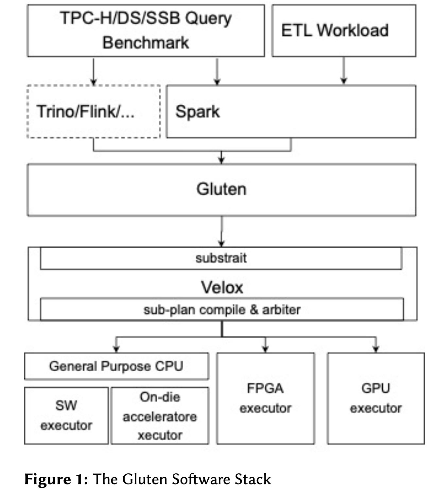

The Gluten Open-Source Software Project Modernizing Java-based Query Engines for the Lakehouse Era
这个项目思路和databricks photon差不多，把spark某些算子通过JNI的方式替换成为C++实现。另外一种思路则是velox/presto, 是直接把presto里面执行引擎部分使用C++重写，其中执行引擎部分作为单独的服务存在。
Prestissimo is the codename of the project aimed to replace Java workers by a C++ process based on Velox, targeting efficiency gains. Prestissimo provides a C++ implementation of Presto’s HTTP REST interface, including worker-to-worker exchange wire protocol and coordinator-to-worker orchestration, and status reporting endpoints, thereby providing a drop-in replacement for Presto workers. The main query workflow consists in receiving a Presto plan fragment from a Java coordinator, translating it into a Velox query plan, and handing it off to Velox for execution. In this manner, no Java processes, JVM, or expensive garbage collection procedures are needed on worker nodes, which used to be a source of operational issues.
这个项目依赖于substrait/velox. gluten作为其中的桥接项目，将spark physical plan/operator转换成为substrait格式然后交给velox来执行。相比spark另外一个优势就是有columnar shuffle service,相比row-based的方式做shuffle更加高效。
Gluten uses Substrait to build a query plan tree. It con- verts Spark’s physical plan to a Substrait plan for the targeted backend, and then shares the Substrait plan over JNI to trigger the execution pipeline in the Velox native library.
Gluten leverages the existing Spark JVM engine to check that an operator is supported by the native library. If not, Gluten falls back to the existing Spark-JVM-based operator. This fallback mechanism comes at the cost of column-to-row and row-to-column data conversions between the memory layouts of the two environments.
Gluten leverages Spark’s existing memory management system. It calls the Spark memory registration API for ev- ery native memory allocation/deallocation action. Spark manages the memory for each task thread. If the thread needs more memory than is available, it can call the spill interface for operators that support this capability. Spark’s memory management system protects against memory leaks and out-of-memory issues.
Gluten reuses its predecessor Gazelle’s Apache Arrow- based Columnar Shuffle Manager as the default shuffle manager. A third-party library is responsible for handling the data transformation from native to Arrow. Alterna- tively, developers are free to implement their own shuffle manager.

其实最开始Intel是有一个自己的C++计算引擎Gazelle, 估计后面不太好维护吧，完了和facebook一起搞这个velox这个东西。
Three companies realized the opportunity to transform Spark into a vectorized SQL engine and break through to its row-based data processing and JVM limitations. Today, Databricks, Intel, and NVIDIA each develop and main- tain JNI-based database acceleration implementations that enable Spark-SQL to offload/accelerate Java code to a C++ library. These are the Photon, the Gluten, and the Spark-Rapids implementations respectively. Of these, only Gluten is an OSS project.
In the same timeframe that Databricks and NVIDIA were developing their solutions, Intel’s Spark team was working on the Gazelle project, a predecessor to Gluten [24]. The Gazelle project focused on enabling Spark to exploit single instruction, multiple data (SIMD), specif- ically Intel’s Advanced Vector Extensions (Intel AVX) technology. A key deficiency of Gazelle was its limited community participation. This meant that the develop- ment burden fell to Intel.
这样搞出来的系统容易有组合优势，问题就在于不好做端到端的优化，但是这种跨公司的开源项目影响力的确很大。